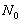
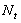
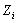
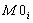
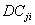
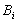
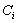
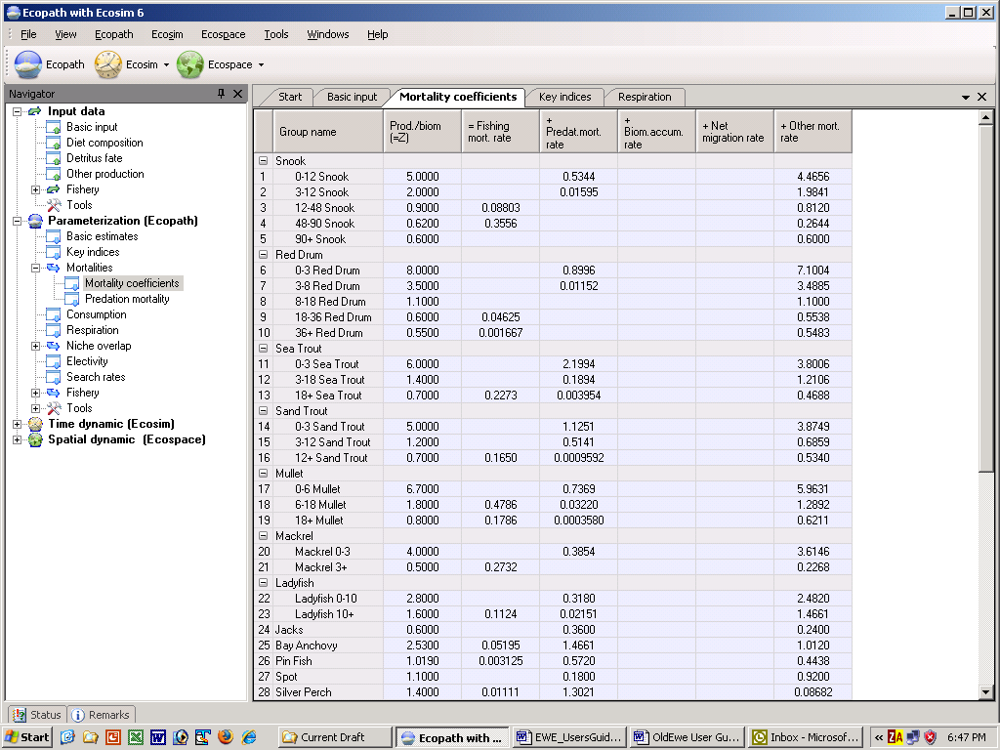

Eq. 25
Eq. 25The Mortality coefficients form (Figure 7.1) is one of the most important forms on the Parameterization menu and it is, as a rule, the first one that should be checked when balancing a model. This form gives the Ecopath-predicted values of each type of mortality for each group in the model (see below). During balancing, the Mortality coefficients form will guide you in identifying where problems are (e.g., if it’s fishing or predation mortality that is too high). If predation mortality is too high, then you can use the Predation mortality form to identify which predators are causing the problem.
Components of mortality in Ecopath
Under equilibrium, each group can be represented by an average organism, with an average weight. This makes it possible to use equations for estimating mortality in numbers, even when dealing with biomass. One such equation is
Eq. 25
where

is a number of organism at time = 0;
is the number of survivors at time = t; and Z is the instantaneous rate of mortality.Under the assumption that

, the mortality of group i, is constant for the organisms included in i, it turns out that, for a large number of growth functions (including the von Bertalanffy Growth Function, or VBGF):
 Eq. 26
Eq. 26
or instantaneous mortality equals total production over mean biomass (Allen, 1971).
The mortality coefficient can be split into its components following a procedure well known among fisheries biologists, i.e.,
Zi = P/Bi = Fishing mortality + Predation mortality + Biomass accumulation + Net migration + Other mortality
or
 =
= Eq. 27
Eq. 27
In some models, (e.g., the Multispecies Virtual Population Analysis model of the North Sea, Sparre, 1991), the ‘other mortality’ component is split between M1i, i.e., predation by predators not included in the model, and

, ‘other mortality’, caused by diseases, senescence, etc. In Ecopath, M1 is not included, as all predation mortality should be described explicitly. Further, M0i is not entered directly, but is computed from the ecotrophic efficiency, EEi, Thus:Fi is the Fishing mortality coefficient;
M2i is the Predation mortality coefficient;
BAi is the Biomass accumulation coefficient;
Ei is the Net migration coefficient (immigration less emigration).
M0i is the Other mortality coefficient.
Ecopath-predicted values for these coefficients are given on the Mortality coefficients form. The mortality coefficients are estimated from the following equations:
Zi = P/Bi
M2i = (∑Bi · Q/Bi · DCji) / Bi
Fi = Yi/Bi
M0i = (1-EEi) · P/Bi
where Q/Bj is the consumption/biomass ratio of predator j;

is the proportion prey i constitutes to the diet of predator j,
is the average biomass of i, and
is the catch of i. The biomass accumulation term, BAi, is a basic input term.If any component of the system is harvested, a summary of the mortality coefficients can be displayed, which presents total mortality (Z = P/B) and its component: fishing mortality (F), other exports (E), other mortality (M0), and predation mortality (M2). Predation mortality is further broken down to show the contribution of each consumer groups to the total predation mortality of each prey group.
See also introductory material on Production, Consumption, Dealing with open system problems and Other mortality.

Figure 7.1. Mortality rates. Z is total mortality; F is fishing mortality; M0 other mortality; and M2 predation mortality. Z = P/B = F + E + M0 + M2.